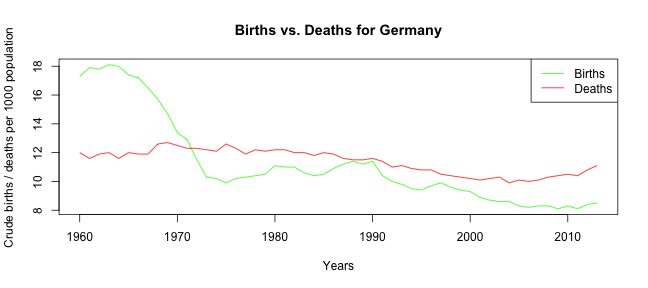

The demographic development within a country or region is fundamental for decision making. For example an aging and declining population requires different strategies than a population which is getting younger.
Especially in developed countries there is a steady decline of population e.g. in Germany:
